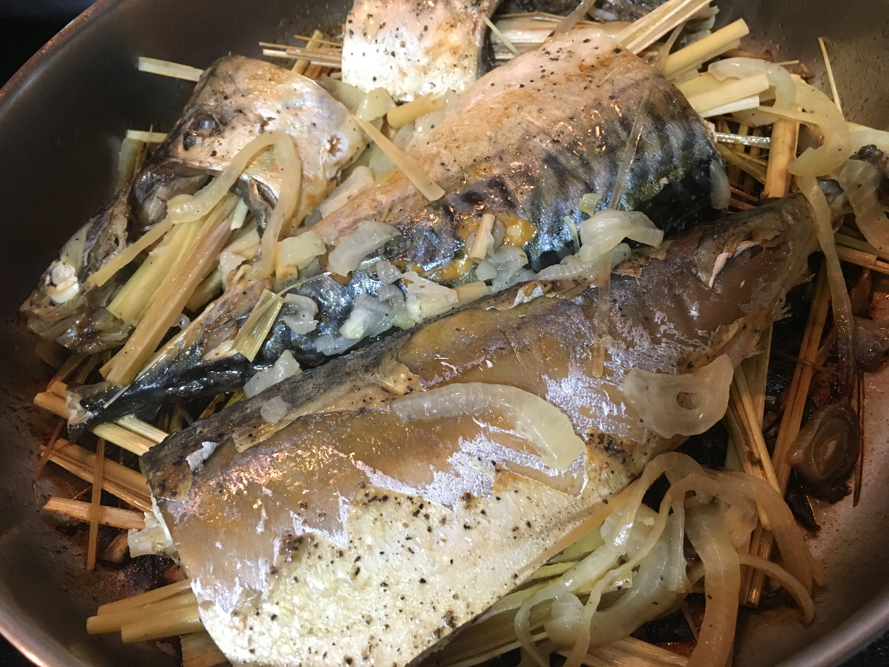
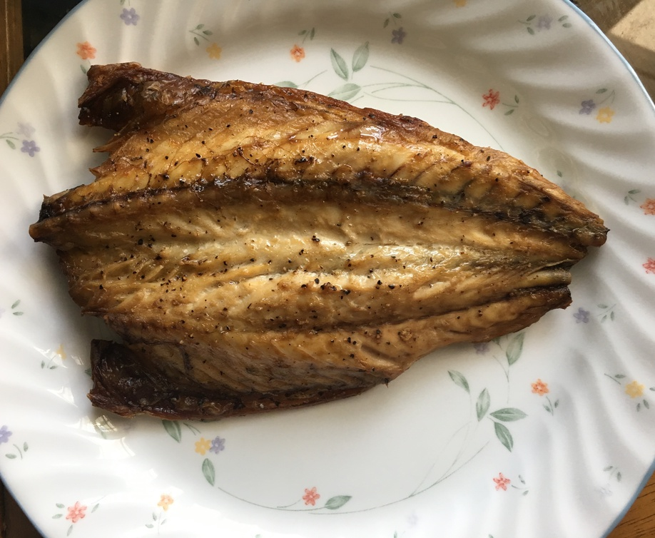

| Other | Meat | Veggie | Fruit |
|---|---|---|---|
| nuoc mam pha | mackerel fish | lemongrass | |
| pepper | onion | ||
| salt | shallot |
| instructions |
|---|
| Cut fish from butt to head, remove fins, tail, gills, gut, head, etc |
| Wash fish by rubbing softly with vinegar and salt |
| Marinate with conservative amounts of salt and pepper |
| If wanted, stuff with lemongrass and onions |
| Steaming: steam fish for 20-25 min |
| Grilling: broil on high heat, skin down, for 15-20 min |
| Frying: pan fry on medium heat with shallots, skin down & flip midway until internal temperature sufficient |
| Eat with nuoc mam pha |